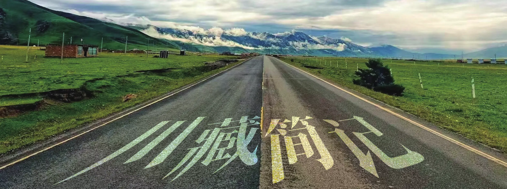

川藏简记
原刊127




一
为什么来西藏？318路上那么多人，大概每个人都会有不同的答案，于我而言，不过是给青春的一个交代。像是一条路，通向过去，也延伸至未来。
“你一个人骑吗？”刚来318被问的最多的就是这句话，殊不知谁又不是一个人来318。第一天晚上偶遇的路人肖老师让我确信了这场征途的主题：岁月悠悠，衰微只及皮肤，热忱抛却，颓丧必至灵魂。
肖老师是一位年过半百的副教授，最开始是一位上世纪的大专生，他身体力行地告诉我这句话的含义。生命不在于世俗的名利，将热忱付诸时间，人生便有了归宿。接下来就是西藏，一个人的浩浩荡荡了。
刚来318那几天，每天都担心骑不到目的地，掐着时程表算来算去，一心低着头骑车就怕计划赶不上变化。路上山清水秀，风大、车多，骑友、车友、摩友也络绎不绝，我不知道往后路上会发生什么，希望每天就这样过去，不发生什么意外就好。偶尔住骑行客栈改善伙食，或者招呼两三个骑友一起拼饭，日子过的还算惬意，也混熟了好些骑友，只是因为种种原因没有一起骑到最后。
到折多塘那天泡温泉后我感冒了，第二天上折多山回来就高反，原定只在新都桥休息一天，后来为了治疗高反又去低海拔的雅江休息了两天，这期间原先熟悉的骑友陆续离开，大家都有不同的计划安排。我记得一上坡就推车还不信我是北大的廖姐，记得陪她一起推车绑了两个护膝为了吹牛来318的小弟，记得乐观开朗带着8岁的儿子来骑川藏的彭姐，还有拿了洛克兄弟赞助的队长。
他还参加了北大赛的大学生9人骑行小队。不出意外的话，他们总会在提前我几天的日子里，吟游着同样的风花雪月。后面赶来的是后轮辐条严重不足路上总是断辐条的清华医学小哥，和他的摄影技术无与伦比的同伴。
很遗憾他俩在理塘时一个高反一个阑尾炎没能骑到拉萨。生命不过三万天，转眼就是一辈子，我们往往沉醉在现实世界里无法自拔，趁年轻去追逐一下自己微不足道的梦想，你会发现不一样的自己。从雅江出来到了禾尼乡，住进了所波大叔之家，我才知道，坚持在318的不止我一个人。
过了新都桥，人们总是忍不住的叩问自己：“我为什么要来318呢？”这一路的天堑、暴雨、疾行的车辆、严重的高反，坚持到最后，会有什么不一样吗？不如在雅江掉头，坐车或是回家。
所波大叔转经不语，他每天都用牦牛肉接待风尘仆仆的旅人，客栈的墙上却早已写满了答案。傍晚，骑友们泡着脚，看着门外壮丽的景色，摆弄着客栈里的吉他，我找来一只记号笔，在墙上写下《尘埃》。“我知道…的并不是拉萨，也不是318，只是对青春的一个交代！”
高原理塘是全国马术中心，丁真的故乡，这里的草原一望无际，花海随处可寻。我以为川藏路上的艰难险阻已经告一段落了，没想到才刚刚开始。前天帮一个四川的女老师修车，帮一个58岁刚退休从山东骑到这来的大爷补胎，他们各送了我一瓶乐虎。
可两瓶乐虎也顶不住海子山顶的雨葬。刚到垭口下起了雨，前方乌云密布，海拔4600多米，附近又没有避雨的地方，只能硬着头皮往下冲。越冲身体越湿，冰渣子和风呼到脸上，只觉得天寒地冻呼吸困难，想死的心都有了。
可这只是14座垭口中的一座，我算是明白了，川藏骑不骑得过去，全看老天爷赏不赏饭吃，更别提烂路和隧道堵车了。110km，爬升2300+，经过强度最大的一天到芒康与萝卟头、智伊汇合，至此我结束了一个人的浩浩荡荡，开始小队骑行。在路上，一个人哭过、笑过，想过很多东西。
一开始自己也不知道到底能走多远，一路上走来遇到了太多美好的人和事，最美丽的是藏区小孩的笑容，最虔诚的是磕长头的人们一步一叩首，最惬意的是一杯暖暖的甜茶，最疯狂的是20公里连续下坡的速度与激情，最幸运的是高反结束时白云朵朵的天气。对于没有宗教信仰的人来说，或许旅途并没有什么灵魂的升华，只是用双脚和车轮丈量着大地的感觉很爽，只是知道了最美的风景在路上，只是明白了不期而遇才是最美的相遇，只是看着芸芸众生都在为自己渺小的生活而努力着，自己也有了前进下去的勇气。
“我歌唱云朵我知道自己终会幸福和一切圣洁的人相聚在天堂”——海子
二
和萝卟头、智伊汇合后，我们开始了小队骑行。霖因为时间原因单飞了，逐梦西藏在芒康便只剩三人继续前行。芒康是个不大不小的镇子，虽然海拔4000多米，其商业化规模却刚好用来歇脚。
后面几天是川藏路上最难的路段，不仅单日里程长、爬升高，而且道路狭窄、破烂，气候恶劣，事故频发，路边甚至不乏打家劫舍之辈。很庆幸有队友同行，一路上没有遇到太多实际上的意外和困难。为了降低行程难度，我们在休整日用半天爬过拉乌山放坡到海拔2000多的如美镇，在半路上遇到了一位带着骑行眼镜难以辨认面部的大哥，他是萝卟头和智伊在滇藏路上的路友，帮我们在垭口拍了一张合照，巧的是这位大哥最后还和我们一起到了拉萨，一起住了一天民宿，举杯共享欢乐时光。
合照里把霖在东达山垭口拍的穿雨衣吃香肠的单人照片P上去，就成了我们团的第一张大合照啦。马尔克斯说：“婚姻不是败给了巨大的灾难，而是日常生活中的琐碎烦恼”。从如美到然乌，便是这川藏路上最能打败人的路途。
每天早上起床谁都不愿意去面对要爬上去的1000多米，和要放下来的十几公里烂路，以及那能将人意志消磨殆尽的百里阴雨连绵。下雨可能不会让你感冒，爬坡可能不会让你累死，烂路放坡可能不会让你摔死，海拔4000的住宿点可能不会让你高反，衣服不能洗一直穿脏的可能不会让你烦死，但天地你我都知道，生活不应该就这样在你的头顶悬一把达摩克利斯之剑，让你的热情在危险的边缘反复消磨着。
318的行者们是多么的需要阳光明媚、大道缓下的一天，哪怕只有一天。幸运的是，然乌—波密正是这样的一天。雪山、冰川、然乌湖、帕隆藏布江，天朗气清，惠风和畅，一路美景应接不暇。
从未料想过这样一天的出现，为了这一天，就算是从上海骑过来也值了，我想。月亮每天让海岸线上升十几米，又下降十几米，周而复始、往复循环。如果你旅行回来能够从容地选择新的生活起点，无论后悔还是得意，都能面带微笑，安详平和地对待生活中的种种波澜，正如涌动着的潮汐，这才是旅行最大的收获。
八宿之后，萝卟头也开始单飞了，我和智伊继续按原计划骑行，因为骑行节奏不同，我每天早上会晚半个多小时才出发，还有一次俩人差点被打劫了。之后是川藏路上轻松的路段，在排龙泡了温泉看见了银河，在鲁朗吃了石锅鸡，在林芝拍了星空，寄了很多明信片。寄明信片是一个有趣的过程，一开始不知道怎么写，写着写着发现自己文笔还不错，每一张明信片都是与一个朋友关系的界定和延伸，让人对当下的“自我”也有了更加清晰的认识。
出了林芝后，一晃就到了拉萨，沿途景色很美，也对旅途预期的结束抱有深深的惋惜。如果再走一次318，我会从然乌出发，经过林芝到拉萨，何必去受那些苦呢，哈哈哈。可转念一想，正是这些苦痛才构建了318的意义。
在大自然的鬼斧神工和波澜壮阔面前，人是如此的微不足道。我深知命如蜉蝣，死亡如影随形，即使穷极一生，也未必能为人类进步做出多大的贡献，而这些经过亿万年雕琢的美景就在眼前，带着混沌、无序、变化万千的力量，亘古不变的矗立着，任由我们去探索、了解、融入、发掘和体验亿万年来积累着的远超我们自身的磅礴力量，怀抱着这种态度，同样的去面对存在于生命本身的律动，将之分享、传递给更多的人，便是一件超越存在本身而极具意义的事情。
人们生活着，努力的创造意义，经历着生命中的爱与死亡，感受着超越生命本身的馈赠与大自然的浩瀚，或许这就是这场旅途教给我的对待生命的简单态度。而拉萨，已经不再重要了。
三
川藏手记节选：Day1成都—雅安今天中午12:00才出发，虽然第一天并不想基调打得这么烂，但这要从昨天的事开始说起。昨天去取配好的骑行眼镜近视片，下车时开车门刚好撞到一辆快速行驶的电动车，车上母女二人，女儿没事，母亲翻了一下，膝盖擦破，拇指撞痛，手背微渗血，引来众人围观，我很不情愿见到这场面。
算了，川藏日记不能写流水账。昨晚遇到了肖老师，年过半百，精神矍铄。肖老师是大学副教授，又在川大进修博士，开朗，对生活充满热情，有强大的好奇心和进取力。
那时已经23:00多了，我还在一个人安装蝶把，他骑一辆山地车悠闲走过，还眉飞色舞回头朝我吹口哨。我心想:不就骑辆没改装的车吗？这小老头还挺豪横。
于是我向他抬头示意：“哟！”他便把车放下，与我聊起来，我们聊了很多，一直到半夜两点左右才因为太晚而散开。他很健谈，像我的一个很好的朋友的爸爸。
肖老大很有激情，他把别人喝茶打牌的时间用于运动做自己喜欢的事情，年复一年。从中专到大专、本科、研究生、博士，他说中国像他这样念下来的不超过两万个。他口中的都是位高权重的名人院士，很难相信街边的小老头这么不一般，见到上一个和他相似的是敖英芳院士，精神雙铄，一个人干三个人的活，眼里充满激情和希望。
肖老师说自己的学生有几个每年都要去骑川藏，都骑十几次了。面对中专出身的他，我惭愧不已，梦想和想法我有，但激情已经不知道去哪儿了。这或许也是我川藏线上一个重要的命题：岁月悠悠，衰微只及皮肤；热忱抛却，颓唐必至灵魂。
今天早上又试图进行行李收纳，最后12点才出发，路上流了很长时间鼻血。可这的湿度已经比北京高了。经过这天的推算，川藏线一天能骑80-130km，但是无论如何强度都很高了，干就完了！
Day30松多—拉萨早上5点多起床，天还没亮，打着手电筒收拾东西，担心今天的188km路程能不能骑完，能不能顺利到拉萨，又心怀沉重不愿旅程就这么结束了。6点去杨门客栈，厨师还在蛋炒饭，于是折回去收拾东西，吃完饭后我给自己的车打气，因为打气筒不好用的缘故打气打了很久，看着身边一辆辆出发的骑友的车，我不禁感慨，不是车胎没打好气，是我不想出发呀！
到了7:10，出发，调整了一下心态，既然是最后一天，最后一座垭口，那就把路上所有的遗憾都在这跑完吧！尽力去冲，不留遗憾！冲了不久就遇到了智伊，她的绑绳掉了个钩子，和遇到的骑友一起处理，过了一会儿我们继续往前走。
我开始用力骑车，慢慢的追上了早上先我出发的骑友们。骑了很久的米拉山，并没有觉得坡度很陡，看来米拉山没有HC坡是真的，我打算到前面的环山陡坡上休息一会，再铆足干劲一口气充冲到坡顶。休息了十几分钟没想到智伊赶上来了，于是嗑了一管葡萄糖，打开音响，准备冲坡！
刚踩没几步一个哥们喊停我说:“大哥别骑了，那里有鹿！”停下后他指给我看，还真有鹿，骑了这么久第一次看到野生的鹿在山坡上优雅缓慢的走着，大大的鹿角撑开，像一只精灵，令人震憾。可惜用手机长焦拍不清楚，看着小哥的无人机屏幕拍摄草坡上的精灵，有种从未有过的电影梦幻感，昭昭天命，未可知也。
再往上看，山坡上还有一只鹿，还一直在盯着我们，可惜我要开始冲最后一个垭口了，没有过多停留。最后4公里坡比较陡，打开音响，准备在坡顶冲一首《横冲直撞》。歌单顺序播放，一首接着一首，到了《横冲直撞》，热血逐渐漫上心头，川藏线上最后一段上坡，我冲了！
横冲直撞，一无所有的闯荡，拼命地踩，鼻涕顺着流了下来，快不行停下的时候，感受到肾上腺素的刺激和流动，就像在水下憋气到快窒息那样涌现的一种不受控制的强烈刺激。兴奋、疲倦、酸痛无力，嗓子冒烟地到了米拉山垭口，垭口上三座金牛身后站着一群骑友。远目眺群山，他们眼中的，或许是这一路的横冲直撞、颠沛流离。
在垭上我让一位哥们拍了我一直想拍的照片：一人一车，风吹散龙达，山海皆可平。放坡下去，下一个目的地是拉萨。从未想过路上会这么开心，在一段旅途的结尾，通天大道宽又阔，大档一路冲到底，只是觉得身上的负担一下子轻了好多，想起来只怕会不停的笑，我真的做到了！！！
途经几个县城时休息了一下，路上还扎胎换了个胎，离拉萨还有十公里的时候就进入拉萨城区了，拉萨可真大呀！一位风尘仆仆的旅者悠然迈向他最后的一段朝圣路。晚上没有专门去布达拉宫，因为太晚太累了，因为明天还有时间去，因为最美的风景在路上，因为朝圣之路在心里。